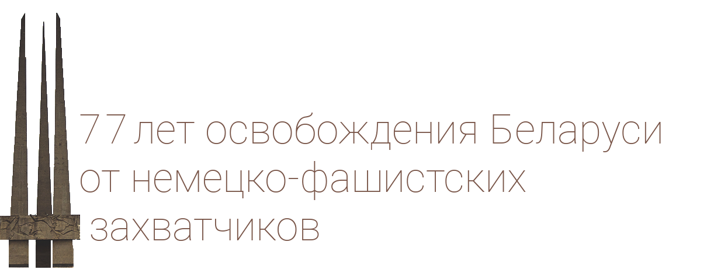

Много лет прошло, как закончилась самая страшная и кровопролитная война. Война, унесшая десятки миллионов жизней. Война, охватившая все континенты нашей планеты. Великой ценой досталась Победа над фашизмом. И не было фактически ни одной семьи, кого бы не коснулось это горе.
Мирное небо над головой, новые красивые города. Это заслуга целого поколения, перенесшего на своих плечах все: разлуку, смерть и горе, разруху и голод, боль и слезы, а затем радость Великой Победы. Слишком многое выпало на плечи этого поколения, и оно все выдержало.
Благодарные земляки помнят о своих героях. А у тех, кому посчастливилось выжить, навсегда остались в памяти события тех суровых лет. Невозможно рассказать обо всех фронтовиках, живых и погибших, хотя каждый из них заслуживает этого. Наш сайт посвящен Герою Советского Союза, нашему земляку, Евгению Филипповичу Ивановскому. Его именем названа одна из улиц в микрорайоне Билево города Витебска. А в 2018 году исполнилось 100 лет со дня рождения этого выдающегося генерала.
Мы обязаны помнить, какой ценой завоевана Победа, помнить своих героев, павших на полях сражений, отдать дань уважения живым и гордиться ими. Память об отцах и дедах мы обязаны передать грядущим поколениям. Тысячи площадей и улиц названы именами Героев. И в нашем городе делается многое, чтобы будущие поколения всегда помнили героев-земляков.
Мирное небо над головой, новые красивые города. Это заслуга целого поколения, перенесшего на своих плечах все: разлуку, смерть и горе, разруху и голод, боль и слезы, а затем радость Великой Победы. Слишком многое выпало на плечи этого поколения, и оно все выдержало.
Благодарные земляки помнят о своих героях. А у тех, кому посчастливилось выжить, навсегда остались в памяти события тех суровых лет. Невозможно рассказать обо всех фронтовиках, живых и погибших, хотя каждый из них заслуживает этого. Наш сайт посвящен Герою Советского Союза, нашему земляку, Евгению Филипповичу Ивановскому. Его именем названа одна из улиц в микрорайоне Билево города Витебска. А в 2018 году исполнилось 100 лет со дня рождения этого выдающегося генерала.
Мы обязаны помнить, какой ценой завоевана Победа, помнить своих героев, павших на полях сражений, отдать дань уважения живым и гордиться ими. Память об отцах и дедах мы обязаны передать грядущим поколениям. Тысячи площадей и улиц названы именами Героев. И в нашем городе делается многое, чтобы будущие поколения всегда помнили героев-земляков.